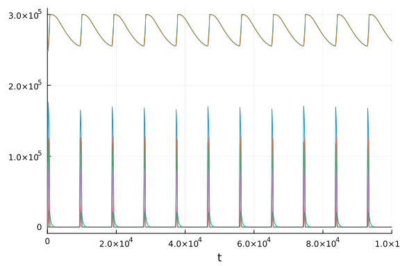
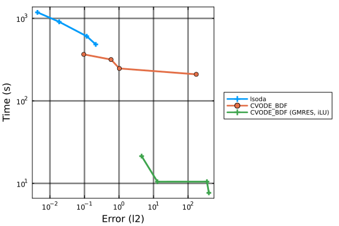
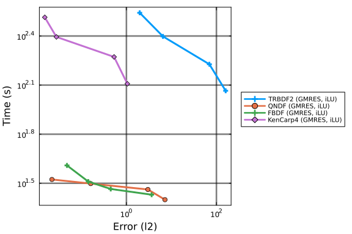
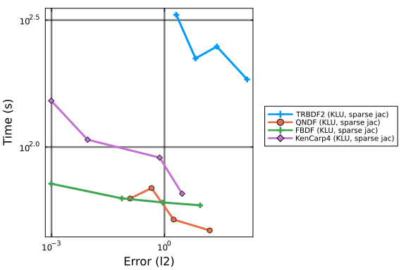
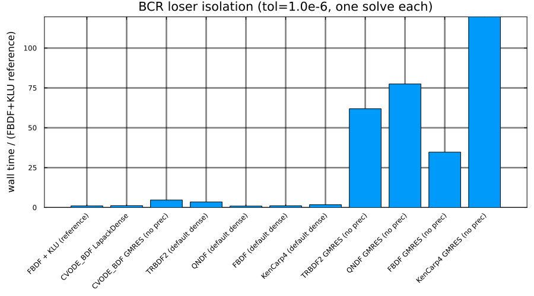

BCR Work-Precision Diagrams
The following benchmark is of 1122 ODEs with 24388 terms that describe a stiff chemical reaction network modeling the BCR signaling network from Barua et al.. We use ReactionNetworkImporters to load the BioNetGen model files as a Catalyst model, and then use ModelingToolkit to convert the Catalyst network model to ODEs.
using DiffEqBase, OrdinaryDiffEq, Catalyst, ReactionNetworkImporters,
Sundials, Plots, DiffEqDevTools, ODEInterface, ODEInterfaceDiffEq,
LSODA, TimerOutputs, LinearAlgebra, ModelingToolkit, BenchmarkTools,
LinearSolve, RecursiveFactorization
using OrdinaryDiffEqBDF, OrdinaryDiffEqSDIRK
gr()
datadir = joinpath(dirname(pathof(ReactionNetworkImporters)), "../data/bcr")
const to = TimerOutput()
tf = 100000.0
# generate ModelingToolkit ODEs
@timeit to "Parse Network" prnbng = loadrxnetwork(BNGNetwork(), joinpath(datadir, "bcr.net"))
show(to)
rn = complete(prnbng)
obs = [eq.lhs for eq in observed(rn)]
@timeit to "Create ODESys" osys = complete(Catalyst.ode_model(rn))
show(to)
tspan = (0.0, tf)
@timeit to "ODEProb No Jac" oprob = ODEProblem{true, SciMLBase.FullSpecialize}(
osys, Float64[], tspan, Float64[])
show(to)
oprob_sparse = ODEProblem{true, SciMLBase.FullSpecialize}(
osys, Float64[], tspan, Float64[]; sparse = true);Scanning blocks...done
Parsing parameters...done
Creating parameters...done
Parsing species...done
Creating variables...done
Setting up expression bindings...done
Parsing groups...done
Parsing functions...done
Parsing and adding reactions...done
──────────────────────────────────────────────────────────────────────────
Time Allocations
─────────────────────── ────────────────────────
Tot / % measured: 5.17s / 99.6% 526MiB / 100.0%
Section ncalls time %tot avg alloc %tot avg
──────────────────────────────────────────────────────────────────────────
Parse Network 1 5.15s 100.0% 5.15s 526MiB 100.0% 526MiB
───────────────────────────────────────────────────────────────────────────
─────────────────────────────────────────────────────────────────────────
Time Allocations
─────────────────────── ────────────────────────
Tot / % measured: 17.9s / 83.8% 2.15GiB / 77.2%
Section ncalls time %tot avg alloc %tot avg
──────────────────────────────────────────────────────────────────────────
Create ODESys 1 9.83s 65.6% 9.83s 1.15GiB 69.1% 1.15GiB
Parse Network 1 5.15s 34.4% 5.15s 526MiB 30.9% 526MiB
───────────────────────────────────────────────────────────────────────────
──────────────────────────────────────────────────────────────────────────
Time Allocations
─────────────────────── ────────────────────────
Tot / % measured: 49.9s / 94.2% 4.59GiB / 89.3%
Section ncalls time %tot avg alloc %tot avg
───────────────────────────────────────────────────────────────────────────
ODEProb No Jac 1 32.0s 68.1% 32.0s 2.44GiB 59.5% 2.44GiB
Create ODESys 1 9.83s 20.9% 9.83s 1.15GiB 28.0% 1.15GiB
Parse Network 1 5.15s 11.0% 5.15s 526MiB 12.5% 526MiB
───────────────────────────────────────────────────────────────────────────@timeit to "ODEProb SparseJac" sparsejacprob = ODEProblem{true, SciMLBase.FullSpecialize}(
osys, Float64[], tspan, Float64[], jac = true, sparse = true)
show(to)───────────────────────────────────────────────────────────────────────────
───
Time Allocations
─────────────────────── ─────────────────────
───
Tot / % measured: 111s / 91.7% 11.9GiB / 88.0%
Section ncalls time %tot avg alloc %tot
avg
───────────────────────────────────────────────────────────────────────────
───
ODEProb SparseJac 1 54.4s 53.6% 54.4s 6.35GiB 60.8% 6.35
GiB
ODEProb No Jac 1 32.0s 31.6% 32.0s 2.44GiB 23.3% 2.44
GiB
Create ODESys 1 9.83s 9.7% 9.83s 1.15GiB 11.0% 1.15
GiB
Parse Network 1 5.15s 5.1% 5.15s 526MiB 4.9% 526
MiB
───────────────────────────────────────────────────────────────────────────
───@show numspecies(rn) # Number of ODEs
@show numreactions(rn) # Approx. number of terms in the ODE
@show length(parameters(rn)); # Number of Parametersnumspecies(rn) = 1122
numreactions(rn) = 24388
length(parameters(rn)) = 128Time ODE derivative function compilation
As compiling the ODE derivative functions has in the past taken longer than running a simulation, we first force compilation by evaluating these functions one time.
u = oprob.u0
du = copy(u)
p = oprob.p
@timeit to "ODE rhs Eval1" oprob.f(du, u, p, 0.0)
@timeit to "ODE rhs spjac Eval1" sparsejacprob.f(du, u, p, 0.0)
show(to)───────────────────────────────────────────────────────────────────────────
─────
Time Allocations
─────────────────────── ───────────────────
─────
Tot / % measured: 189s / 95.1% 13.5GiB / 89.5
%
Section ncalls time %tot avg alloc %tot
avg
───────────────────────────────────────────────────────────────────────────
─────
ODE rhs Eval1 1 78.5s 43.6% 78.5s 1.64GiB 13.5% 1.
64GiB
ODEProb SparseJac 1 54.4s 30.2% 54.4s 6.35GiB 52.5% 6.
35GiB
ODEProb No Jac 1 32.0s 17.8% 32.0s 2.44GiB 20.2% 2.
44GiB
Create ODESys 1 9.83s 5.5% 9.83s 1.15GiB 9.5% 1.
15GiB
Parse Network 1 5.15s 2.9% 5.15s 526MiB 4.3% 5
26MiB
ODE rhs spjac Eval1 1 9.28ms 0.0% 9.28ms 123KiB 0.0% 1
23KiB
───────────────────────────────────────────────────────────────────────────
─────We also time the ODE rhs function with BenchmarkTools as it is more accurate given how fast evaluating f is:
@btime oprob.f($du, $u, $p, 0.0)41.809 μs (2 allocations: 336 bytes)
1122-element Vector{Float64}:
-61.028082045662714
5.941959152600332e-5
-0.00017585525801146217
1.0927353287115693e-5
-2.375821949685643e-10
0.0
-0.021580601559854376
-1.674730187857901e-11
-2.0210128871802965e-9
-0.021503434567899174
⋮
-1.3438399696192487e-31
-1.821222651639453e-23
-2.0469554560482396e-23
-1.5706899341477363e-14
-3.706198991389375e-21
-3.422528102939304e-13
-7.529912023768182e-13
-5.53409527730824e-23
-1.6608734902441886e-17Js = similar(sparsejacprob.f.jac_prototype)
@timeit to "SparseJac Eval1" sparsejacprob.f.jac(Js, u, p, 0.0)
@timeit to "SparseJac Eval2" sparsejacprob.f.jac(Js, u, p, 0.0)
show(to)───────────────────────────────────────────────────────────────────────────
─────
Time Allocations
─────────────────────── ───────────────────
─────
Tot / % measured: 284s / 94.1% 14.2GiB / 89.5
%
Section ncalls time %tot avg alloc %tot
avg
───────────────────────────────────────────────────────────────────────────
─────
SparseJac Eval1 1 87.2s 32.7% 87.2s 675MiB 5.2% 6
75MiB
ODE rhs Eval1 1 78.5s 29.4% 78.5s 1.64GiB 12.8% 1.
64GiB
ODEProb SparseJac 1 54.4s 20.3% 54.4s 6.35GiB 49.8% 6.
35GiB
ODEProb No Jac 1 32.0s 12.0% 32.0s 2.44GiB 19.1% 2.
44GiB
Create ODESys 1 9.83s 3.7% 9.83s 1.15GiB 9.0% 1.
15GiB
Parse Network 1 5.15s 1.9% 5.15s 526MiB 4.0% 5
26MiB
ODE rhs spjac Eval1 1 9.28ms 0.0% 9.28ms 123KiB 0.0% 1
23KiB
SparseJac Eval2 1 101μs 0.0% 101μs 912B 0.0%
912B
───────────────────────────────────────────────────────────────────────────
─────Picture of the solution
sol = solve(oprob, CVODE_BDF(), saveat = tf/1000.0, reltol = 1e-5, abstol = 1e-5)
plot(sol; idxs = obs, legend = false, fmt = :png)
Generate Test Solution
@time sol = solve(oprob, CVODE_BDF(), abstol = 1/10^12, reltol = 1/10^12)
test_sol = TestSolution(sol);644.026586 seconds (6.71 M allocations: 2.130 GiB, 0.21% gc time, 0.08% com
pilation time)Setups
Sets plotting defaults
default(legendfontsize = 7, framestyle = :box, gridalpha = 0.3, gridlinewidth = 2.5)Declare pre-conditioners
using IncompleteLU, LinearAlgebra
const τ = 1e2
const τ2 = 1e2
jaccache = sparsejacprob.f.jac(oprob.u0, oprob.p, 0.0)
W = I - 1.0*jaccache
prectmp = ilu(W, τ = τ)
preccache = Ref(prectmp)
function psetupilu(p, t, u, du, jok, jcurPtr, gamma)
if !jok
sparsejacprob.f.jac(jaccache, u, p, t)
jcurPtr[] = true
# W = I - gamma*J
@. W = -gamma*jaccache
idxs = diagind(W)
@. @view(W[idxs]) = @view(W[idxs]) + 1
# Build preconditioner on W
preccache[] = ilu(W, τ = τ)
end
end
function precilu(z, r, p, t, y, fy, gamma, delta, lr)
ldiv!(z, preccache[], r)
end
function incompletelu(A, p)
Pl = ilu(convert(AbstractMatrix, A); τ = τ2)
return Pl, I
end;Sets tolerances
abstols = 1.0 ./ 10.0 .^ (5:8)
reltols = 1.0 ./ 10.0 .^ (5:8);Failures
CVODE with KLU diverges on this problem and is omitted from all suites:
try
solve(sparsejacprob, CVODE_BDF(linear_solver = :KLU), abstol = 1e-8, reltol = 1e-8);
catch e
println("CVODE_BDF with KLU failed: $e")
endretcode: Success
Interpolation: 3rd order Hermite
t: 21250-element Vector{Float64}:
0.0
8.530416743262687e-10
8.531269784937014e-6
9.38354372175639e-5
0.0001791396046501908
0.00026444377208281766
0.0003938430786133609
0.0006069752274633084
0.0009765102032046184
0.001694692142730532
⋮
99583.52272160228
99647.50156318981
99711.48040477735
99775.45924636489
99839.43808795243
99903.41692953996
99947.33141266952
99991.24589579907
100000.0
u: 21250-element Vector{Vector{Float64}}:
[299717.8348854, 47149.15480798, 46979.01102231, 290771.2428252, 299980.73
96749, 300000.0, 141.3151575495, 0.1256496403614, 0.4048783555301, 140.8052
338618 … 5.279974499715e-11, 1.005585387399e-24, 6.724953378237e-17, 3.39
5560698281e-16, 1.787990228838e-5, 8.761844379939e-13, 0.0002517949074779,
0.0005539124513976, 2.281251822741e-14, 1.78232055967e-8]
[299717.834885348, 47149.15480798, 46979.01102231, 290771.2428252, 299980.
7396749, 300000.0, 141.31515754948157, 0.1256496403614, 0.4048783555301, 14
0.80523386178166 … 5.279974499715e-11, 1.0055853873989998e-24, 6.72495337
8236999e-17, 3.395560698281e-16, 1.787990228838e-5, 8.761844379939e-13, 0.0
002517949074779, 0.0005539124513976, 2.281251822741e-14, 1.78232055967e-8]
[299717.8343647574, 47149.154807977386, 46979.011022305385, 290771.2428252
0014, 299980.7396749, 300000.0, 141.31515736537588, 0.12564964037709234, 0.
4048783555457002, 140.8052336783343 … 5.279974499714919e-11, 1.0055853873
97986e-24, 6.724953378223368e-17, 3.3955606982794407e-16, 1.787990228837986
5e-5, 8.761844379938684e-13, 0.0002517949074778971, 0.0005539124513975936,
2.281251822740953e-14, 1.7823205596699857e-8]
[299717.8291591478, 47149.154807742954, 46979.01102205176, 290771.24282520
113, 299980.7396749, 300000.0, 141.3151555233761, 0.1256496415779975, 0.404
8783567406875, 140.8052318429211 … 5.279974499713703e-11, 1.0055853874449
137e-24, 6.724953378866749e-17, 3.395560698361107e-16, 1.7879902288378527e-
5, 8.76184437993553e-13, 0.00025179490747786787, 0.0005539124513975294, 2.2
812518227404943e-14, 1.7823205596698444e-8]
[299717.8239539325, 47149.15480723098, 46979.01102152158, 290771.242825202
35, 299980.7396749, 300000.0, 141.31515368011995, 0.12564964416810973, 0.40
48783593182312, 140.80523000625607 … 5.279974499711518e-11, 1.00558538762
9334e-24, 6.724953381328821e-17, 3.395560698691282e-16, 1.787990228837719e-
5, 8.761844379932404e-13, 0.00025179490747783865, 0.0005539124513974652, 2.
2812518227400507e-14, 1.7823205596697038e-8]
[299717.8187491442, 47149.15480641848, 46979.01102069197, 290771.242825203
87, 299980.7396749, 300000.0, 141.31515183550403, 0.12564964825951233, 0.40
48783633898745, 140.80522816823617 … 5.279974499707761e-11, 1.00558538804
15089e-24, 6.724953386690722e-17, 3.395560699459465e-16, 1.787990228837585e
-5, 8.761844379929337e-13, 0.00025179490747780943, 0.0005539124513974011, 2
.2812518227396247e-14, 1.7823205596695638e-8]
[299717.81085475476, 47149.154804595026, 46979.01101884468, 290771.2428252
0724, 299980.7396749, 300000.0, 141.31514903470352, 0.12564965740882778, 0.
40487837249511016, 140.8052253774509 … 5.279974499697496e-11, 1.005585389
3523886e-24, 6.724953402949404e-17, 3.395560702084003e-16, 1.78799022883738
17e-5, 8.761844379924924e-13, 0.00025179490747776514, 0.0005539124513973036
, 2.2812518227390185e-14, 1.7823205596693524e-8]
[299717.7978542127, 47149.1548000324, 46979.01101424841, 290771.2428252169
6, 299980.7396749, 300000.0, 141.3151444144936, 0.12564968020861525, 0.4048
783951852038, 140.80522077376244 … 5.279974499663173e-11, 1.0055853942300
045e-24, 6.724953457910726e-17, 3.395560713038397e-16, 1.787990228837047e-5
, 8.761844379918893e-13, 0.0002517949074776922, 0.0005539124513971431, 2.28
1251822738162e-14, 1.7823205596690066e-8]
[299717.77532002697, 47149.15478752479, 46979.01100169908, 290771.24282525
317, 299980.7396749, 300000.0, 141.3151363831068, 0.12564974235602455, 0.40
487845703373515, 140.80521277109582 … 5.2799744995230104e-11, 1.005585415
7481682e-24, 6.724953657444628e-17, 3.3955607688536943e-16, 1.7879902288364
666e-5, 8.761844379915419e-13, 0.0002517949074775657, 0.0005539124513968649
, 2.28125182273733e-14, 1.7823205596684167e-8]
[299717.73154913925, 47149.15474659125, 46979.01096074444, 290771.24282544
18, 299980.7396749, 300000.0, 141.31512069959203, 0.125649943756259, 0.4048
786574651034, 140.8051971436676 … 5.279974498722369e-11, 1.00558554597776
5e-24, 6.724954488272694e-17, 3.3955611488601857e-16, 1.7879902288353377e-5
, 8.761844379954986e-13, 0.0002517949074773199, 0.0005539124513963241, 2.28
12518227400765e-14, 1.7823205596673804e-8]
⋮
[299236.0711115895, 31889.671343996622, 31876.268404812912, 293709.1970390
155, 299991.67502435925, 299999.98818346777, 95.42526687349138, 0.061840551
26890152, 0.20031358171738686, 95.38517516066044 … 1.726228716591724e-11,
1.5416188996903398e-25, 1.5379757749932625e-17, 7.689862191069444e-17, 7.9
0798917712598e-6, 2.0999297629659862e-13, 8.974762066336252e-5, 0.000197471
8002550009, 7.547519052897215e-15, 7.882930186784442e-9]
[299209.0173798892, 32207.879732096193, 32193.803218901656, 293647.2686357
9976, 299991.4633868998, 299999.98731367174, 96.36873991309878, 0.063269746
81871092, 0.2049191447934562, 96.32663678108017 … 1.784733263130918e-11,
1.6411539273196837e-25, 1.6128307009171743e-17, 8.066691112882368e-17, 8.11
6975919063984e-6, 2.198478630264357e-13, 9.25774982383043e-5, 0.00020369761
74563864, 7.842095369822894e-15, 8.091254032223849e-9]
[299180.9481031405, 32520.596707240988, 32505.830275226373, 293586.4217323
898, 299991.2504318672, 299999.98637714016, 97.29528062688217, 0.0647076085
2502785, 0.2095515488442691, 97.25111769177289 … 1.8439960263029123e-11,
1.745559535652652e-25, 1.689948742966098e-17, 8.454942410660936e-17, 8.3274
02267649003e-6, 2.2999115186858966e-13, 9.54392884090376e-5, 0.000209993636
16654566, 8.143398055755366e-15, 8.301012917220005e-9]
[299151.81072933465, 32827.754825437485, 32812.28229241744, 293526.6683646
697, 299991.03615555476, 299999.9853680903, 98.20466508882096, 0.0661546008
6970062, 0.21421226532103993, 98.15839449621943 … 1.9040127252890522e-11,
1.8547760072530703e-25, 1.769381883330514e-17, 8.854905583228802e-17, 8.53
930024702033e-6, 2.4042831914758424e-13, 9.833291534353214e-5, 0.0002163596
9360909958, 8.451648374982772e-15, 8.512238765794525e-9]
[299121.54862957424, 33129.286527115815, 33113.09187931506, 293468.0205684
097, 299990.8205415798, 299999.9842801303, 99.09666743372642, 0.06761131709
288777, 0.21890317785259872, 99.04824187911856 … 1.964780042853867e-11, 1
.9693720596347586e-25, 1.8511992619509786e-17, 9.266884595606554e-17, 8.752
728175871516e-6, 2.5117008931775376e-13, 0.00010125845258781694, 0.00022279
595235052046, 8.76714784778018e-15, 8.724989711824656e-9]
[299090.10088257096, 33425.12391678114, 33408.19131437574, 293410.49042531
41, 299990.6035595923, 299999.98310619063, 99.97105911954824, 0.06907849201
190523, 0.22362662520912363, 99.92043186810739 … 2.026302569761747e-11, 2
.0891694820178087e-25, 1.9354724675235003e-17, 9.691288347237995e-17, 8.967
752184657056e-6, 2.622236503292033e-13, 0.00010421624381431969, 0.000229303
17521116048, 9.09020216928592e-15, 8.939331677829754e-9]
[299067.7950824667, 33624.85267964066, 33607.40447583356, 293371.655456330
9, 299990.4538104585, 299999.98224660783, 100.56092032672545, 0.07009205920
358892, 0.2268890468449905, 100.50875510309757 … 2.068969528470828e-11, 2
.1749468420349216e-25, 1.9947875442181352e-17, 9.989983840291085e-17, 9.116
320979335805e-6, 2.6999953076392097e-13, 0.0001062653622599832, 0.000233811
2936353443, 9.316542778964537e-15, 9.087429222620088e-9]
[299044.87666216394, 33821.84370452127, 33803.87257706908, 293333.35681800
25, 299990.3033761697, 299999.9813400584, 101.14229781145866, 0.07111131056
627912, 0.23016920919429326, 101.0885730604748 … 2.1119990247765404e-11,
2.2634285179981566e-25, 2.055333973943741e-17, 1.029490032598298e-16, 9.265
72425691998e-6, 2.7793237627473547e-13, 0.00010833016914623058, 0.000238353
9338528632, 9.54677481305634e-15, 9.236358605941255e-9]
[299040.23269128136, 33860.783486343746, 33842.70724685365, 293325.7866684
999, 299990.27330405347, 299999.98115347227, 101.2571711499382, 0.071315204
42199141, 0.23082531491385966, 101.20313295631865 … 2.1206206945998523e-1
1, 2.2813761965340057e-25, 2.0675538670841577e-17, 1.0356447531804287e-16,
9.295609333382565e-6, 2.795326862488973e-13, 0.000108743683975941, 0.000239
26368043850882, 9.593145146811155e-15, 9.266148889701998e-9]Work-Precision Diagrams (competitive solvers)
Main suites: methods that remain competitive on this large sparse stiff system. Everything else is timed once, in isolation, in the loser section below.
lsoda and the default dense CVODE_BDF used to be swept across this whole tolerance grid. Measured on CI (2026-07-27 build, per point): lsoda 500-1200 s and CVODE_BDF 210-370 s, against 9-22 s for CVODE_BDF with GMRES + incomplete LU. That one panel alone cost 2 h 44 min of the document's 7 h 57 min, so both were moved to the isolation section. TRBDF2 (880 s / 975 s summed over the grid for the GMRES+iLU and KLU variants) and KenCarp4 with GMRES+iLU (870 s) were removed from the Julia panels for the same reason - roughly 7x QNDF/FBDF in the same configuration.
GMRES + incomplete LU
setups = [
Dict(
:alg=>CVODE_BDF(linear_solver = :GMRES, prec = precilu, psetup = psetupilu, prec_side = 1),
:prob_choice => 2),
Dict(:alg=>QNDF(linsolve = KrylovJL_GMRES(; precs = incompletelu), autodiff = AutoFiniteDiff(), concrete_jac = true),
:prob_choice => 3),
Dict(:alg=>FBDF(linsolve = KrylovJL_GMRES(; precs = incompletelu), autodiff = AutoFiniteDiff(), concrete_jac = true),
:prob_choice => 3),
Dict(:alg=>NordsieckBDF(linsolve = KrylovJL_GMRES(; precs = incompletelu), autodiff = AutoFiniteDiff(), concrete_jac = true),
:prob_choice => 3)
];wp = WorkPrecisionSet(
[oprob, oprob_sparse, sparsejacprob], abstols, reltols, setups; error_estimate = :l2,
saveat = tf/1000.0, appxsol = [test_sol, test_sol, test_sol], maxiters = Int(1e6), numruns = 1)
names = ["CVODE_BDF (GMRES, iLU)" "QNDF (GMRES, iLU)" "FBDF (GMRES, iLU)" "NordsieckBDF (GMRES, iLU)"]
plot(wp; label = names)
Sparse Jacobian + KLU
setups = [
Dict(:alg=>QNDF(linsolve = KLUFactorization(), autodiff = AutoFiniteDiff())),
Dict(:alg=>FBDF(linsolve = KLUFactorization(), autodiff = AutoFiniteDiff())),
Dict(:alg=>NordsieckBDF(linsolve = KLUFactorization(), autodiff = AutoFiniteDiff())),
Dict(:alg=>KenCarp4(linsolve = KLUFactorization(), autodiff = AutoFiniteDiff()))
];wp = WorkPrecisionSet(sparsejacprob, abstols, reltols, setups; error_estimate = :l2,
saveat = tf/1000.0, appxsol = test_sol, maxiters = Int(1e6), numruns = 1)
names = ["QNDF (KLU, sparse jac)" "FBDF (KLU, sparse jac)" "NordsieckBDF (KLU, sparse jac)" "KenCarp4 (KLU, sparse jac)"]
plot(wp; label = names)
Loser methods (large cost in isolation)
On this ~1122-ODE sparse chemistry system the following are not competitive: lsoda, dense direct CVODE (default and Lapack), default dense Julia Newton/linear solves, GMRES without a preconditioner, and TRBDF2/KenCarp4 even with the good linear solvers. We do not fold them into the main work-precision suites. Instead each is timed once, in isolation, at a fixed tolerance, next to a competitive sparse reference so the wall-time gap is obvious.
Each isolated solve is capped by wall clock. In the 2026-07-27 CI build the uncapped versions of the four unpreconditioned-GMRES entries alone measured 2110 s, 3763 s, 4707 s and 7267 s - about 4.9 h for four data points, i.e. this "cheap isolation" section had itself become one of the most expensive parts of the document. A solve that hits the cap is reported as a lower bound (>cap), which is all the diagram needs in order to show the gap.
const _loser_tol = 1e-6
const _loser_maxiters = Int(1e6)
const _loser_cap = 180.0 # seconds of wall clock per isolated solve
loser_labels = String[]
loser_elapsed = Float64[]
# LSODA.jl does not support callbacks, so `lsoda` is the one entry that has to
# run to completion; everything else is stopped by the wall-clock callback.
function _time_loser!(label, prob, alg; cap = true)
println("--- $label ---")
tstart = time()
kw = if cap
capcb = DiscreteCallback(
(u, t, integrator) -> time() - tstart > _loser_cap,
integrator -> terminate!(integrator); save_positions = (false, false))
(; callback = capcb)
else
(;)
end
t = @elapsed sol = solve(prob, alg; abstol = _loser_tol, reltol = _loser_tol,
maxiters = _loser_maxiters, save_everystep = false, kw...)
hit_cap = cap && t >= _loser_cap
@show sol.retcode
println("elapsed = ", t, " s", hit_cap ? " (hit the $(_loser_cap) s cap)" : "")
push!(loser_labels, hit_cap ? label * " (>cap)" : label)
push!(loser_elapsed, t)
return sol
end
# Competitive reference (sparse KLU)
_time_loser!("FBDF + KLU (reference)", sparsejacprob,
FBDF(linsolve = KLUFactorization(), autodiff = AutoFiniteDiff()))
# Multistep dense direct solvers
_time_loser!("lsoda", oprob, lsoda(); cap = false)
_time_loser!("CVODE_BDF (dense)", oprob, CVODE_BDF())
_time_loser!("CVODE_BDF LapackDense", oprob, CVODE_BDF(linear_solver = :LapackDense))
# Bare CVODE GMRES (no preconditioner)
_time_loser!("CVODE_BDF GMRES (no prec)", oprob, CVODE_BDF(linear_solver = :GMRES))
# Default dense Julia factorizations on the non-sparse problem
_time_loser!("TRBDF2 (default dense)", oprob, TRBDF2(autodiff = AutoFiniteDiff()))
_time_loser!("QNDF (default dense)", oprob, QNDF(autodiff = AutoFiniteDiff()))
_time_loser!("FBDF (default dense)", oprob, FBDF(autodiff = AutoFiniteDiff()))
_time_loser!("KenCarp4 (default dense)", oprob, KenCarp4(autodiff = AutoFiniteDiff()))
# Unpreconditioned GMRES on the dense residual problem
_time_loser!("TRBDF2 GMRES (no prec)", oprob,
TRBDF2(linsolve = KrylovJL_GMRES(), autodiff = AutoFiniteDiff()))
_time_loser!("QNDF GMRES (no prec)", oprob,
QNDF(linsolve = KrylovJL_GMRES(), autodiff = AutoFiniteDiff()))
_time_loser!("FBDF GMRES (no prec)", oprob,
FBDF(linsolve = KrylovJL_GMRES(), autodiff = AutoFiniteDiff()))
_time_loser!("KenCarp4 GMRES (no prec)", oprob,
KenCarp4(linsolve = KrylovJL_GMRES(), autodiff = AutoFiniteDiff()))
# Slow methods with the *good* linear solvers, dropped from the panels above
_time_loser!("TRBDF2 (GMRES, iLU)", sparsejacprob,
TRBDF2(linsolve = KrylovJL_GMRES(; precs = incompletelu), autodiff = AutoFiniteDiff(),
concrete_jac = true))
_time_loser!("KenCarp4 (GMRES, iLU)", sparsejacprob,
KenCarp4(linsolve = KrylovJL_GMRES(; precs = incompletelu), autodiff = AutoFiniteDiff(),
concrete_jac = true))
_time_loser!("TRBDF2 (KLU, sparse jac)", sparsejacprob,
TRBDF2(linsolve = KLUFactorization(), autodiff = AutoFiniteDiff()))--- FBDF + KLU (reference) ---
sol.retcode = SciMLBase.ReturnCode.Success
elapsed = 43.452247207 s
--- lsoda ---
sol.retcode = SciMLBase.ReturnCode.Success
elapsed = 462.428260729 s
--- CVODE_BDF (dense) ---
sol.retcode = SciMLBase.ReturnCode.Terminated
elapsed = 180.102267702 s (hit the 180.0 s cap)
--- CVODE_BDF LapackDense ---
sol.retcode = SciMLBase.ReturnCode.Success
elapsed = 53.977438961 s
--- CVODE_BDF GMRES (no prec) ---
sol.retcode = SciMLBase.ReturnCode.Terminated
elapsed = 180.000910067 s (hit the 180.0 s cap)
--- TRBDF2 (default dense) ---
sol.retcode = SciMLBase.ReturnCode.Terminated
elapsed = 180.049865299 s (hit the 180.0 s cap)
--- QNDF (default dense) ---
sol.retcode = SciMLBase.ReturnCode.Success
elapsed = 52.323393584 s
--- FBDF (default dense) ---
sol.retcode = SciMLBase.ReturnCode.Success
elapsed = 59.384246679 s
--- KenCarp4 (default dense) ---
sol.retcode = SciMLBase.ReturnCode.Success
elapsed = 102.0161986 s
--- TRBDF2 GMRES (no prec) ---
sol.retcode = SciMLBase.ReturnCode.Terminated
elapsed = 180.063492753 s (hit the 180.0 s cap)
--- QNDF GMRES (no prec) ---
sol.retcode = SciMLBase.ReturnCode.Terminated
elapsed = 180.077020435 s (hit the 180.0 s cap)
--- FBDF GMRES (no prec) ---
sol.retcode = SciMLBase.ReturnCode.Terminated
elapsed = 180.089576363 s (hit the 180.0 s cap)
--- KenCarp4 GMRES (no prec) ---
sol.retcode = SciMLBase.ReturnCode.Terminated
elapsed = 180.081259852 s (hit the 180.0 s cap)
--- TRBDF2 (GMRES, iLU) ---
sol.retcode = SciMLBase.ReturnCode.Success
elapsed = 106.450117348 s
--- KenCarp4 (GMRES, iLU) ---
sol.retcode = SciMLBase.ReturnCode.Success
elapsed = 120.748551354 s
--- TRBDF2 (KLU, sparse jac) ---
sol.retcode = SciMLBase.ReturnCode.Success
elapsed = 164.961048787 s
retcode: Success
Interpolation: 1st order linear
t: 2-element Vector{Float64}:
0.0
100000.0
u: 2-element Vector{Vector{Float64}}:
[299717.8348854, 47149.15480798, 46979.01102231, 290771.2428252, 299980.73
96749, 300000.0, 141.3151575495, 0.1256496403614, 0.4048783555301, 140.8052
338618 … 5.279974499715e-11, 1.005585387399e-24, 6.724953378237e-17, 3.39
5560698281e-16, 1.787990228838e-5, 8.761844379939e-13, 0.0002517949074779,
0.0005539124513976, 2.281251822741e-14, 1.78232055967e-8]
[299039.3062572856, 33868.50451906513, 33850.40723686918, 293324.285672657
13, 299990.2673224451, 299999.9811161308, 101.27994607619478, 0.07135574111
323977, 0.23095575406697177, 101.22584513401051 … 2.1223353536647e-11, 2.
2849535915288554e-25, 2.0699877406374123e-17, 1.0368706018926925e-16, 9.301
550533388903e-6, 2.798514071916266e-13, 0.0001088259192251399, 0.0002394445
9972244708, 9.602376872063093e-15, 9.272071244812228e-9]# Relative cost vs the sparse KLU reference (first entry)
ref_t = loser_elapsed[1]
bar(loser_labels, loser_elapsed ./ ref_t; xrotation = 45, legend = false,
ylabel = "wall time / (FBDF+KLU reference)",
title = "BCR loser isolation (tol=$_loser_tol, one capped solve each)",
size = (900, 500), left_margin = 5Plots.mm, bottom_margin = 15Plots.mm)
Summary of results
Finally, we compute a single diagram comparing the various solvers used.
Declare solvers
We designate the solvers we wish to compare.
setups = [
Dict(
:alg=>CVODE_BDF(linear_solver = :GMRES, prec = precilu, psetup = psetupilu, prec_side = 1),
:prob_choice => 2),
Dict(
:alg=>QNDF(linsolve = KrylovJL_GMRES(; precs = incompletelu), autodiff = AutoFiniteDiff(), concrete_jac = true),
:prob_choice => 3),
Dict(
:alg=>FBDF(linsolve = KrylovJL_GMRES(; precs = incompletelu), autodiff = AutoFiniteDiff(), concrete_jac = true),
:prob_choice => 3),
Dict(
:alg=>NordsieckBDF(linsolve = KrylovJL_GMRES(; precs = incompletelu), autodiff = AutoFiniteDiff(), concrete_jac = true),
:prob_choice => 3),
Dict(:alg=>QNDF(linsolve = KLUFactorization(), autodiff = AutoFiniteDiff()), :prob_choice => 3),
Dict(:alg=>FBDF(linsolve = KLUFactorization(), autodiff = AutoFiniteDiff()), :prob_choice => 3),
Dict(:alg=>NordsieckBDF(linsolve = KLUFactorization(), autodiff = AutoFiniteDiff()), :prob_choice => 3),
Dict(:alg=>KenCarp4(linsolve = KLUFactorization(), autodiff = AutoFiniteDiff()), :prob_choice => 3)
];Plot Work-Precision Diagram
For these, we generate a work-precision diagram for the selection of solvers.
wp = WorkPrecisionSet(
[oprob, oprob_sparse, sparsejacprob], abstols, reltols, setups; error_estimate = :l2,
saveat = tf/1000.0, appxsol = [test_sol, test_sol, test_sol], maxiters = Int(1e9), numruns = 200)
names = ["CVODE_BDF (GMRES, iLU)" "QNDF (GMRES, iLU)" "FBDF (GMRES, iLU)" "NordsieckBDF (GMRES, iLU)" "QNDF (KLU, sparse jac)" "FBDF (KLU, sparse jac)" "NordsieckBDF (KLU, sparse jac)" "KenCarp4 (KLU, sparse jac)"]
colors = [:green :deepskyblue1 :dodgerblue2 :mediumorchid :royalblue2 :slateblue3 :orchid :lightskyblue]
markershapes = [:octagon :hexagon :rtriangle :diamond :pentagon :ltriangle :dtriangle :star5]
plot(wp; label = names, left_margin = 10Plots.mm, right_margin = 10Plots.mm,
xticks = [1e-3, 1e-2, 1e-1, 1e0, 1e1, 1e2, 1e3], yticks = [1e0, 1e1, 1e2, 1e3],
color = colors, markershape = markershapes, legendfontsize = 15,
tickfontsize = 15, guidefontsize = 15, legend = :topright, lw = 20,
la = 0.8, markersize = 20, markerstrokealpha = 1.0, markerstrokewidth = 1.5,
gridalpha = 0.3, gridlinewidth = 7.5, size = (1100, 1000))
Appendix
These benchmarks are a part of the SciMLBenchmarks.jl repository, found at: https://github.com/SciML/SciMLBenchmarks.jl. For more information on high-performance scientific machine learning, check out the SciML Open Source Software Organization https://sciml.ai.
To locally run this benchmark, do the following commands:
using SciMLBenchmarks
SciMLBenchmarks.weave_file("benchmarks/Bio","BCR.jmd")Computer Information:
Julia Version 1.10.12
Commit d93beab124c (2026-08-15 10:29 UTC)
Build Info:
Official https://julialang.org/ release
Platform Info:
OS: Linux (x86_64-linux-gnu)
CPU: 128 × AMD EPYC 7502 32-Core Processor
WORD_SIZE: 64
LIBM: libopenlibm
LLVM: libLLVM-15.0.7 (ORCJIT, znver2)
Threads: 128 default, 0 interactive, 64 GC (on 128 virtual cores)
Environment:
JULIA_DEPOT_PATH = /home/crackauc/github-runners/amdci8-1/.julia
JULIA_NUM_THREADS = auto
Package Information:
Status `~/github-runners/amdci8-1/_work/SciMLBenchmarks.jl/SciMLBenchmarks.jl/benchmarks/Bio/Project.toml`
[47edcb42] ADTypes v1.24.0
[6e4b80f9] BenchmarkTools v1.8.0
⌃ [479239e8] Catalyst v16.3.0
[d360d2e6] ChainRulesCore v1.26.1
⌃ [2b5f629d] DiffEqBase v7.18.2
⌃ [f3b72e0c] DiffEqDevTools v3.4.0
[40713840] IncompleteLU v0.2.1
[033835bb] JLD2 v0.6.6
⌃ [7f56f5a3] LSODA v1.1.0
⌃ [7ed4a6bd] LinearSolve v5.13.0
⌃ [961ee093] ModelingToolkit v11.39.1
[54ca160b] ODEInterface v0.5.2
⌅ [09606e27] ODEInterfaceDiffEq v4.1.0
⌃ [1dea7af3] OrdinaryDiffEq v7.7.0
[89bda076] OrdinaryDiffEqAdamsBashforthMoulton v2.2.0
⌃ [6ad6398a] OrdinaryDiffEqBDF v2.4.4
⌃ [bbf590c4] OrdinaryDiffEqCore v4.15.0
⌃ [becaefa8] OrdinaryDiffEqExtrapolation v2.5.0
⌃ [1344f307] OrdinaryDiffEqLowOrderRK v2.2.3
⌃ [43230ef6] OrdinaryDiffEqRosenbrock v2.7.0
⌃ [2d112036] OrdinaryDiffEqSDIRK v2.9.0
[358294b1] OrdinaryDiffEqStabilizedRK v2.6.0
⌃ [79d7bb75] OrdinaryDiffEqVerner v2.4.0
[91a5bcdd] Plots v1.41.7
[b4db0fb7] ReactionNetworkImporters v1.5.0
[f2c3362d] RecursiveFactorization v0.2.30
⌃ [31c91b34] SciMLBenchmarks v0.1.3
[c3572dad] Sundials v6.6.0
⌅ [a759f4b9] TimerOutputs v0.5.29
Info Packages marked with ⌃ and ⌅ have new versions available. Those with ⌃ may be upgradable, but those with ⌅ are restricted by compatibility constraints from upgrading. To see why use `status --outdated`And the full manifest:
Status `~/github-runners/amdci8-1/_work/SciMLBenchmarks.jl/SciMLBenchmarks.jl/benchmarks/Bio/Manifest.toml`
[47edcb42] ADTypes v1.24.0
[14f7f29c] AMD v0.5.3
[6e696c72] AbstractPlutoDingetjes v1.4.0
[1520ce14] AbstractTrees v0.4.5
[7d9f7c33] Accessors v0.1.45
[79e6a3ab] Adapt v4.7.0
[66dad0bd] AliasTables v1.1.3
[ec485272] ArnoldiMethod v0.4.0
[4fba245c] ArrayInterface v7.30.0
[4c555306] ArrayLayouts v1.12.2
⌃ [aae01518] BandedMatrices v1.11.0
[6e4b80f9] BenchmarkTools v1.8.0
[e2ed5e7c] Bijections v0.2.2
[b2a6c25c] BinaryHeaps v1.1.0
⌃ [caf10ac8] BipartiteGraphs v0.1.11
[d1d4a3ce] BitFlags v0.1.10
[62783981] BitTwiddlingConvenienceFunctions v0.1.6
[8e7c35d0] BlockArrays v1.10.0
⌃ [70df07ce] BracketingNonlinearSolve v1.12.5
[fa961155] CEnum v0.5.0
[2a0fbf3d] CPUSummary v0.2.7
⌃ [479239e8] Catalyst v16.3.0
[d360d2e6] ChainRulesCore v1.26.1
[0b6fb165] ChunkCodecCore v1.0.2
[4c0bbee4] ChunkCodecLibZlib v1.1.0
[55437552] ChunkCodecLibZstd v1.0.0
[fb6a15b2] CloseOpenIntervals v0.1.13
[944b1d66] CodecZlib v0.7.9
[35d6a980] ColorSchemes v3.31.0
[3da002f7] ColorTypes v0.12.1
[c3611d14] ColorVectorSpace v0.11.0
[5ae59095] Colors v0.13.1
⌅ [861a8166] Combinatorics v1.0.2
[38540f10] CommonSolve v0.2.14
[bbf7d656] CommonSubexpressions v0.3.1
[f70d9fcc] CommonWorldInvalidations v1.2.0
[34da2185] Compat v4.18.1
[b152e2b5] CompositeTypes v0.1.4
[a33af91c] CompositionsBase v0.1.2
[2569d6c7] ConcreteStructs v0.2.8
[f0e56b4a] ConcurrentUtilities v2.6.0
[8f4d0f93] Conda v1.10.3
[187b0558] ConstructionBase v1.6.0
[d38c429a] Contour v0.6.3
[adafc99b] CpuId v0.3.1
[9a962f9c] DataAPI v1.16.0
[864edb3b] DataStructures v0.19.6
[e2d170a0] DataValueInterfaces v1.0.0
[8bb1440f] DelimitedFiles v1.9.1
⌃ [2b5f629d] DiffEqBase v7.18.2
⌃ [459566f4] DiffEqCallbacks v4.19.2
⌃ [f3b72e0c] DiffEqDevTools v3.4.0
⌃ [77a26b50] DiffEqNoiseProcess v5.36.0
[163ba53b] DiffResults v1.1.0
[b552c78f] DiffRules v1.16.0
[a0c0ee7d] DifferentiationInterface v0.7.21
[8d63f2c5] DispatchDoctor v0.4.28
[31c24e10] Distributions v0.25.131
[ffbed154] DocStringExtensions v0.9.5
[5b8099bc] DomainSets v0.8.1
⌃ [7c1d4256] DynamicPolynomials v0.6.6
[06fc5a27] DynamicQuantities v1.13.0
[4e289a0a] EnumX v1.0.7
[f151be2c] EnzymeCore v0.8.21
[460bff9d] ExceptionUnwrapping v0.1.11
[e2ba6199] ExprTools v0.1.11
[55351af7] ExproniconLite v0.10.14
[c87230d0] FFMPEG v0.4.5
[7034ab61] FastBroadcast v1.4.0
[9aa1b823] FastClosures v0.3.2
[a4df4552] FastPower v1.5.0
[5789e2e9] FileIO v1.20.0
[1a297f60] FillArrays v1.17.0
[64ca27bc] FindFirstFunctions v3.2.1
[6a86dc24] FiniteDiff v2.33.0
⌅ [53c48c17] FixedPointNumbers v0.8.6
[1fa38f19] Format v1.3.7
[f6369f11] ForwardDiff v1.4.5
[a85aefff] FunctionMaps v0.1.2
[069b7b12] FunctionWrappers v1.1.3
[77dc65aa] FunctionWrappersWrappers v1.13.0
[46192b85] GPUArraysCore v0.2.0
⌃ [28b8d3ca] GR v0.73.26
[a0844989] Gamma v1.2.0
[d7ba0133] Git v1.5.0
[86223c79] Graphs v1.14.0
[42e2da0e] Grisu v1.0.2
⌅ [cd3eb016] HTTP v1.11.0
[076d061b] HashArrayMappedTries v0.2.0
⌅ [eafb193a] Highlights v0.5.3
[3e5b6fbb] HostCPUFeatures v0.1.18
[34004b35] HypergeometricFunctions v0.3.30
[7073ff75] IJulia v1.34.4
[615f187c] IfElse v0.1.1
[3263718b] ImplicitDiscreteSolve v2.2.0
[40713840] IncompleteLU v0.2.1
[d25df0c9] Inflate v0.1.5
[18e54dd8] IntegerMathUtils v0.1.4
[8197267c] IntervalSets v0.7.14
[3587e190] InverseFunctions v0.1.17
[92d709cd] IrrationalConstants v0.2.6
[82899510] IteratorInterfaceExtensions v1.0.0
[033835bb] JLD2 v0.6.6
[1019f520] JLFzf v0.1.11
[692b3bcd] JLLWrappers v1.8.0
⌅ [682c06a0] JSON v0.21.4
[ae98c720] Jieko v0.2.1
⌃ [ccbc3e58] JumpProcesses v9.29.3
[ba0b0d4f] Krylov v0.10.9
⌃ [2faa5264] LHLFactorization v2.2.0
⌃ [7f56f5a3] LSODA v1.1.0
[b964fa9f] LaTeXStrings v1.4.1
[23fbe1c1] Latexify v0.16.12
[10f19ff3] LayoutPointers v0.1.17
[87fe0de2] LineSearch v0.1.16
⌃ [7ed4a6bd] LinearSolve v5.13.0
[2ab3a3ac] LogExpFunctions v1.0.1
[e6f89c97] LoggingExtras v1.2.0
[bdcacae8] LoopVectorization v0.12.174
[1914dd2f] MacroTools v0.5.16
[d125e4d3] ManualMemory v0.1.8
[bb5d69b7] MaybeInplace v0.1.8
[739be429] MbedTLS v1.1.10
[442fdcdd] Measures v0.3.3
[e1d29d7a] Missings v1.2.0
⌃ [961ee093] ModelingToolkit v11.39.1
⌃ [7771a370] ModelingToolkitBase v1.68.0
⌃ [6bb917b9] ModelingToolkitTearing v1.20.5
[2e0e35c7] Moshi v0.3.12
[46d2c3a1] MuladdMacro v0.2.7
[102ac46a] MultivariatePolynomials v0.5.19
[ffc61752] Mustache v1.0.21
[d8a4904e] MutableArithmetics v1.8.0
[77ba4419] NaNMath v1.1.4
⌃ [8913a72c] NonlinearSolve v4.28.0
⌃ [be0214bd] NonlinearSolveBase v2.47.0
⌃ [5959db7a] NonlinearSolveFirstOrder v2.4.0
⌃ [9a2c21bd] NonlinearSolveQuasiNewton v1.15.1
⌃ [26075421] NonlinearSolveSpectralMethods v1.8.0
[54ca160b] ODEInterface v0.5.2
⌅ [09606e27] ODEInterfaceDiffEq v4.1.0
[6fe1bfb0] OffsetArrays v1.17.0
[4d8831e6] OpenSSL v1.6.1
⌅ [bac558e1] OrderedCollections v1.8.2
⌃ [1dea7af3] OrdinaryDiffEq v7.7.0
[89bda076] OrdinaryDiffEqAdamsBashforthMoulton v2.2.0
⌃ [6ad6398a] OrdinaryDiffEqBDF v2.4.4
⌃ [bbf590c4] OrdinaryDiffEqCore v4.15.0
⌃ [50262376] OrdinaryDiffEqDefault v2.5.0
⌃ [4302a76b] OrdinaryDiffEqDifferentiation v3.10.0
⌃ [becaefa8] OrdinaryDiffEqExtrapolation v2.5.0
⌃ [1344f307] OrdinaryDiffEqLowOrderRK v2.2.3
⌃ [127b3ac7] OrdinaryDiffEqNonlinearSolve v2.9.0
⌃ [43230ef6] OrdinaryDiffEqRosenbrock v2.7.0
⌃ [b4bd8bb3] OrdinaryDiffEqRosenbrockTableaus v2.4.1
⌃ [2d112036] OrdinaryDiffEqSDIRK v2.9.0
[358294b1] OrdinaryDiffEqStabilizedRK v2.6.0
⌃ [b1df2697] OrdinaryDiffEqTsit5 v2.1.3
⌃ [79d7bb75] OrdinaryDiffEqVerner v2.4.0
[90014a1f] PDMats v0.11.41
⌅ [d96e819e] Parameters v0.12.3
⌅ [69de0a69] Parsers v2.8.7
[ccf2f8ad] PlotThemes v3.3.0
[995b91a9] PlotUtils v1.4.4
[91a5bcdd] Plots v1.41.7
[e409e4f3] PoissonRandom v0.4.13
[f517fe37] Polyester v0.7.19
[1d0040c9] PolyesterWeave v0.2.2
⌃ [d236fae5] PreallocationTools v1.6.0
⌅ [aea7be01] PrecompileTools v1.2.1
[21216c6a] Preferences v1.5.2
[27ebfcd6] Primes v0.5.7
[43287f4e] PtrArrays v1.4.0
[0c0d3e7f] PureKLU v1.4.1
[1fd47b50] QuadGK v2.11.3
[b4db0fb7] ReactionNetworkImporters v1.5.0
[988b38a3] ReadOnlyArrays v0.2.0
[795d4caa] ReadOnlyDicts v1.0.1
[3cdcf5f2] RecipesBase v1.3.4
[01d81517] RecipesPipeline v0.6.12
⌃ [731186ca] RecursiveArrayTools v4.5.0
[f2c3362d] RecursiveFactorization v0.2.30
[189a3867] Reexport v1.2.2
[05181044] RelocatableFolders v1.0.1
[ae029012] Requires v1.3.1
[ae5879a3] ResettableStacks v1.4.0
[9fe22ead] RespecializeParams v1.3.0
[79098fc4] Rmath v0.9.0
[47965b36] RootedTrees v2.27.0
[f2b01f46] Roots v3.0.7
[7e49a35a] RuntimeGeneratedFunctions v0.5.25
⌃ [9dfe8606] SCCNonlinearSolve v1.15.0
[94e857df] SIMDTypes v0.1.0
[476501e8] SLEEFPirates v0.6.46
⌃ [0bca4576] SciMLBase v3.49.2
⌃ [31c91b34] SciMLBenchmarks v0.1.3
⌃ [19f34311] SciMLJacobianOperators v0.1.17
[a6db7da4] SciMLLogging v2.1.0
⌃ [c0aeaf25] SciMLOperators v1.29.0
[431bcebd] SciMLPublic v1.3.0
⌃ [53ae85a6] SciMLStructures v1.10.4
[7e506255] ScopedValues v1.6.2
[6c6a2e73] Scratch v1.3.0
[efcf1570] Setfield v1.1.2
[992d4aef] Showoff v1.0.3
[777ac1f9] SimpleBufferStream v1.2.0
⌃ [727e6d20] SimpleNonlinearSolve v2.14.0
[699a6c99] SimpleTraits v0.9.6
[a2af1166] SortingAlgorithms v1.2.3
[bd59d7e1] SparseBandedMatrices v1.4.0
[a57abbd0] SparseColumnPivotedQR v2.1.7
[0a514795] SparseMatrixColorings v0.4.27
[276daf66] SpecialFunctions v2.9.0
[860ef19b] StableRNGs v1.0.4
[0c0c59c1] StarAlgebras v0.3.0
⌃ [64909d44] StateSelection v1.11.0
[aedffcd0] Static v1.4.6
[0d7ed370] StaticArrayInterface v1.10.0
[90137ffa] StaticArrays v1.9.19
[1e83bf80] StaticArraysCore v1.4.4
[82ae8749] StatsAPI v1.8.0
[2913bbd2] StatsBase v0.34.13
[4c63d2b9] StatsFuns v2.2.1
[7792a7ef] StrideArraysCore v0.5.9
[69024149] StringEncodings v0.3.7
[09ab397b] StructArrays v0.7.3
[c3572dad] Sundials v6.6.0
[2efcf032] SymbolicIndexingInterface v0.3.55
[19f23fe9] SymbolicLimits v1.2.0
⌅ [d1185830] SymbolicUtils v4.45.0
⌃ [0c5d862f] Symbolics v7.36.0
[3783bdb8] TableTraits v1.0.1
[bd369af6] Tables v1.14.0
[ed4db957] TaskLocalValues v0.1.3
[62fd8b95] TensorCore v0.1.1
[8ea1fca8] TermInterface v2.0.0
[1c621080] TestItems v1.1.0
[8290d209] ThreadingUtilities v0.5.6
⌅ [a759f4b9] TimerOutputs v0.5.29
[3bb67fe8] TranscodingStreams v0.11.3
[d5829a12] TriangularSolve v0.2.6
[410a4b4d] Tricks v0.1.13
[781d530d] TruncatedStacktraces v1.4.0
[5c2747f8] URIs v1.7.0
[3a884ed6] UnPack v1.0.2
[1cfade01] UnicodeFun v0.4.1
[41fe7b60] Unzip v0.2.0
[3d5dd08c] VectorizationBase v0.21.74
[33b4df10] VectorizedRNG v0.2.26
[81def892] VersionParsing v1.3.0
[d30d5f5c] WeakCacheSets v0.1.0
[44d3d7a6] Weave v0.10.12
[ddb6d928] YAML v0.4.16
[c2297ded] ZMQ v1.5.1
[6e34b625] Bzip2_jll v1.0.9+0
[83423d85] Cairo_jll v1.18.7+0
[ee1fde0b] Dbus_jll v1.16.2+0
[2702e6a9] EpollShim_jll v0.0.20230411+1
[2e619515] Expat_jll v2.8.3+0
⌅ [b22a6f82] FFMPEG_jll v8.1.2+0
[a3f928ae] Fontconfig_jll v2.17.1+0
[d7e528f0] FreeType2_jll v2.14.3+1
[559328eb] FriBidi_jll v1.0.17+0
⌃ [0656b61e] GLFW_jll v3.4.1+1
⌅ [d2c73de3] GR_jll v0.73.26+0
⌅ [b0724c58] GettextRuntime_jll v0.22.4+0
[61579ee1] Ghostscript_jll v9.55.1+0
[020c3dae] Git_LFS_jll v3.7.1+0
[f8c6e375] Git_jll v2.55.0+0
[7746bdde] Glib_jll v2.88.3+0
[3b182d85] Graphite2_jll v1.3.16+0
⌅ [2e76f6c2] HarfBuzz_jll v8.5.1+0
[1d5cc7b8] IntelOpenMP_jll v2025.2.0+0
[aacddb02] JpegTurbo_jll v3.2.0+1
[c1c5ebd0] LAME_jll v3.100.3+0
[88015f11] LERC_jll v4.1.0+0
[1d63c593] LLVMOpenMP_jll v22.1.7+0
[aae0fff6] LSODA_jll v0.1.2+0
⌅ [e9f186c6] Libffi_jll v3.4.7+0
[7e76a0d4] Libglvnd_jll v1.7.1+1
[94ce4f54] Libiconv_jll v1.18.0+0
[4b2f31a3] Libmount_jll v2.42.0+0
[89763e89] Libtiff_jll v4.7.3+0
[38a345b3] Libuuid_jll v2.42.0+0
[856f044c] MKL_jll v2025.2.0+0
[c771fb93] ODEInterface_jll v0.0.2+0
[e7412a2a] Ogg_jll v1.3.6+0
⌅ [656ef2d0] OpenBLAS32_jll v0.3.24+0
[9bd350c2] OpenSSH_jll v10.5.1+0
⌃ [458c3c95] OpenSSL_jll v3.5.7+0
[efe28fd5] OpenSpecFun_jll v0.5.6+0
[91d4177d] Opus_jll v1.6.1+0
⌃ [36c8627f] Pango_jll v1.58.0+0
[30392449] Pixman_jll v0.46.4+0
[c0090381] Qt6Base_jll v6.10.2+2
[629bc702] Qt6Declarative_jll v6.10.2+2
[ce943373] Qt6ShaderTools_jll v6.10.2+1
[6de9746b] Qt6Svg_jll v6.10.2+0
[e99dba38] Qt6Wayland_jll v6.10.2+1
[f50d1b31] Rmath_jll v0.5.2+0
⌅ [ca45d3f4] SuiteSparse32_jll v5.10.1+0
[fb77eaff] Sundials_jll v7.5.0+0
[a44049a8] Vulkan_Loader_jll v1.3.243+0
[a2964d1f] Wayland_jll v1.24.0+0
[ffd25f8a] XZ_jll v5.8.3+0
[f67eecfb] Xorg_libICE_jll v1.1.2+0
[c834827a] Xorg_libSM_jll v1.2.6+0
[4f6342f7] Xorg_libX11_jll v1.8.13+0
[0c0b7dd1] Xorg_libXau_jll v1.0.13+0
[935fb764] Xorg_libXcursor_jll v1.2.4+0
[a3789734] Xorg_libXdmcp_jll v1.1.6+0
[1082639a] Xorg_libXext_jll v1.3.8+0
[d091e8ba] Xorg_libXfixes_jll v6.0.2+0
[a51aa0fd] Xorg_libXi_jll v1.8.4+0
[d1454406] Xorg_libXinerama_jll v1.1.7+0
[ec84b674] Xorg_libXrandr_jll v1.5.6+0
[ea2f1a96] Xorg_libXrender_jll v0.9.12+0
[a65dc6b1] Xorg_libpciaccess_jll v0.19.0+0
[c7cfdc94] Xorg_libxcb_jll v1.17.1+0
[cc61e674] Xorg_libxkbfile_jll v1.2.0+0
[e920d4aa] Xorg_xcb_util_cursor_jll v0.1.6+0
[12413925] Xorg_xcb_util_image_jll v0.4.1+0
[2def613f] Xorg_xcb_util_jll v0.4.1+0
[975044d2] Xorg_xcb_util_keysyms_jll v0.4.1+0
[0d47668e] Xorg_xcb_util_renderutil_jll v0.3.10+0
[c22f9ab0] Xorg_xcb_util_wm_jll v0.4.2+0
[35661453] Xorg_xkbcomp_jll v1.4.7+0
[33bec58e] Xorg_xkeyboard_config_jll v2.47.0+2
[c5fb5394] Xorg_xtrans_jll v1.6.0+0
[8f1865be] ZeroMQ_jll v4.3.6+0
[3161d3a3] Zstd_jll v1.5.7+1
[35ca27e7] eudev_jll v3.2.14+0
⌅ [214eeab7] fzf_jll v0.61.1+0
[a4ae2306] libaom_jll v3.14.1+0
⌃ [0ac62f75] libass_jll v0.17.4+0
[1183f4f0] libdecor_jll v0.2.2+0
[8e53e030] libdrm_jll v2.4.134+0
[2db6ffa8] libevdev_jll v1.13.4+0
[f638f0a6] libfdk_aac_jll v2.0.4+0
[36db933b] libinput_jll v1.28.1+0
[b53b4c65] libpng_jll v1.6.58+0
[a9144af2] libsodium_jll v1.0.21+0
[9a156e7d] libva_jll v2.23.0+0
[f27f6e37] libvorbis_jll v1.3.8+0
[009596ad] mtdev_jll v1.1.7+0
[1317d2d5] oneTBB_jll v2022.3.0+0
⌅ [1270edf5] x264_jll v10164.0.1+0
[dfaa095f] x265_jll v4.1.0+0
[d8fb68d0] xkbcommon_jll v1.13.0+0
[0dad84c5] ArgTools v1.1.1
[56f22d72] Artifacts
[2a0f44e3] Base64
[ade2ca70] Dates
[8ba89e20] Distributed
[f43a241f] Downloads v1.6.0
[7b1f6079] FileWatching
[9fa8497b] Future
[b77e0a4c] InteractiveUtils
[4af54fe1] LazyArtifacts
[b27032c2] LibCURL v0.6.4
[76f85450] LibGit2
[8f399da3] Libdl
[37e2e46d] LinearAlgebra
[56ddb016] Logging
[d6f4376e] Markdown
[a63ad114] Mmap
[ca575930] NetworkOptions v1.2.0
[44cfe95a] Pkg v1.10.0
[de0858da] Printf
[9abbd945] Profile
[3fa0cd96] REPL
[9a3f8284] Random
[ea8e919c] SHA v0.7.0
[9e88b42a] Serialization
[6462fe0b] Sockets
[2f01184e] SparseArrays v1.10.0
[10745b16] Statistics v1.10.0
[4607b0f0] SuiteSparse
[fa267f1f] TOML v1.0.3
[a4e569a6] Tar v1.10.0
[8dfed614] Test
[cf7118a7] UUIDs
[4ec0a83e] Unicode
[e66e0078] CompilerSupportLibraries_jll v1.1.1+0
[deac9b47] LibCURL_jll v8.4.0+0
[e37daf67] LibGit2_jll v1.6.4+0
[29816b5a] LibSSH2_jll v1.11.0+1
[c8ffd9c3] MbedTLS_jll v2.28.1010+0
[14a3606d] MozillaCACerts_jll v2025.12.2
[4536629a] OpenBLAS_jll v0.3.23+5
[05823500] OpenLibm_jll v0.8.5+0
[efcefdf7] PCRE2_jll v10.42.0+1
[bea87d4a] SuiteSparse_jll v7.2.1+1
[83775a58] Zlib_jll v1.2.13+1
[8e850b90] libblastrampoline_jll v5.11.0+0
[8e850ede] nghttp2_jll v1.52.0+1
[3f19e933] p7zip_jll v17.6.1+0
Info Packages marked with ⌃ and ⌅ have new versions available. Those with ⌃ may be upgradable, but those with ⌅ are restricted by compatibility constraints from upgrading. To see why use `status --outdated -m`